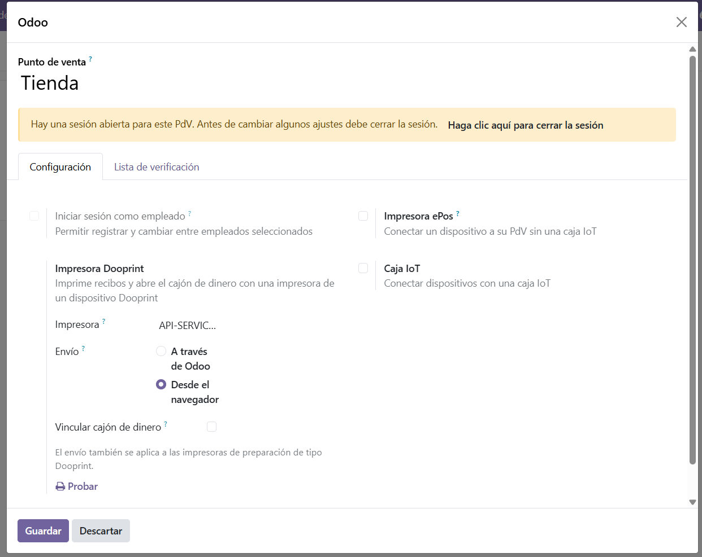

Receipts, kitchen tickets and the cash drawer of your Point of Sale, printed through a dooprint device — with or without the browser.
The official way to reach a receipt printer from the Point of Sale is the IoT Box, and that comes with Enterprise. Anyone running Odoo Community ends up opening ports, building tunnels or leaving a browser open so a ticket comes out.
This module lets the Point of Sale print on the printers of a dooprint device, which runs on an ordinary computer next to them.
| Delivery | What happens | Good for |
|---|---|---|
| Through Odoo | The Point of Sale sends the rendered ticket to Odoo, which queues it for the device. | Any network. Odoo in the cloud, the till on a tablet outside the shop network. |
| From the browser | The Point of Sale sends the ticket straight to the device over the local network, the same way Odoo talks to an Epson ePOS printer. | The till is on the printer network and you want the shortest path. |
The point of sale settings, with the dooprint printer, its delivery and the cash drawer.

Requires Odoo 19 and the Point of Sale application.
Written and maintained by API SERVICE S.A.C.
Questions and bug reports: info@apiservicesac.com
Licensed under AGPL-3.